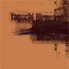
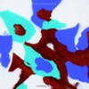
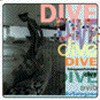
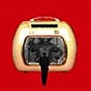
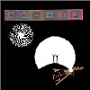

strange music page
japanese strange music * * * ya - yo
- ya-to-i
- Yapoos
- 矢口博康
- 矢野誠
- 山下洋輔
- 山本精一
- 山本精一 & PHEW
- 横川理彦
- 吉田達也
- Yoshimi and Yuka
#まさかこんなのだと思ってなかったんですよね、店頭で聴いてビックリしちゃいました。ポップスです、ほんとにポップス。
ya-to-i = ボアダムズ(山本精一) + ムーンライダーズ(岡田徹) + マンスフィールド(伊藤俊治)
てな訳で、篠原ともえのアルバムの曲をやってたのは知ってました。(
MEGAPHONE SPEAKSとか)
なんだかアイドルポップスの良いところを凝縮して、ボーカルも上手にしたような感じで。半分くらいの曲でボーカル取ってるKobayashi FumieさんはASLNってROVOの益子樹さんのバンドの人みたい。
バグルスとか音響派とかギターポップとかドラムンベースとかネオアコとか、色々な材料を使って作ったポップス。特に好きなのは7曲目かな、山本精一さんのコーラスも気持ちよく響く爽やかな曲。(2001.9.9)
- Funny Feelin'
- ひまわり
- シークレット・ソング
- Nothing new under the sky
- Street to Go
- Landsat
- Cycle
- Powder
- Funny Feelin' (reprise)
- 空の名前
- 山本精一 (guitars,programming,bass,chorus)
- 岡田徹 (keyboards,programming)
- 伊藤俊治 (programming,beats)
- 大串崇 (drums,percussions on 2.3.5.7.8.)
- Kobayashi Fumie (vocals on 1.2.6.7.)
- yachiyo (chorus on 1.)
- 益子樹 (voice treatment on 2.)
- 武川雅寛 (trumpet on 2.)
- 寺元りえ子 (vocals on 3.8.)
- MOA (rap on 4.5.)
- Banana Ice (rap on 4.)
- Takiguchi Hideo (voice treatment on 5.)(beats on 10.)
- Lori Fine (vocals on 8.)
- Louie (beats,pad treatment on 10.)
- Kouzama Miki (vocals on 10.)
FLAVOUR OF SOUND: FVCC-80141 (2001.8.22)
- バーバラ・セクサロイド
- キスを
- 肉屋のように
- Daddy the Heaven
- ラヴ・クローン
- コレクター
- 労働慰安唱歌
- ロリータ108号
- 宇宙士官候補生
- 素敵な時間
- 戸川純 (vocals)
- 泉水敏郎 (drums,percusisons)
- 中原信雄 (bass,synthesizers)
- 比賀江隆男 (guitars)
- 吉川洋一郎 (synthesizers)
- 小滝満 (synthesizers)
TEICHIKU/BAIDIS: 30CH-276 (1987.12.16)
- 私は孤高で豪華
- 噴怒の河
- 背徳なんて怖くない
- 棒状の罪
- 鉄の火
- 祈りの街
- 去る四月の二十六日
- My God
- 森に棲む
- 大天使のように
- 戸川純 (vocals)
- 泉水俊郎 (drums,percussions)
- 比賀江隆男 (guitars)
- 小滝満 (keyboards,synthesizers)
- 国本佳宏 (keyboards)
- 吉川洋一郎 (keyboards)
- 中原信雄 (bass)
TEICHIKU/BAIDIS: 30CH-323 (1988.9.21)
- アンチ・アンニュイ
- men's junan
- 3つかぞえろ
- 供述書によれば
- 夜へ
- ヒステリヤ
- 私の中の他人
- fool girl
- ミステリアス・ガイ
- ギルガメッシュ
- 赤い戦車
- 戸川純 (vocals)
- 泉水俊郎 (drums,percussions)
- 吉川洋一郎 (keyboards)
- 中原信雄 (bass)
- 戸田誠司 (guitars,synthesizers on 1.2.4.9.11.)
- 平沢進 (guitars on 3.6.)
- 浦山秀彦 (guitars on 10.)
- 戸川京子 (b-vox on 3.)
東芝EMI:TOCP-6153 (1991)
#
P-Modelの平沢進さんがゲスト参加しています。前作に引き続いてわりとテンションは高いです。若干のメンバー変更があったようです。
- 君の代
- ヴィールス
- 12階の一番奥
- 急告
- 私は好奇心の強い女
- ダダダイズム
- NOT DEAD LUNA
- VIP～ロシアよりYをこめて～
- コンドルが飛んでくる
- テーマ
- 戸川純 (vocals)
- 中原信雄 (bass,guitars,keyboards)
- ライオンメリー (keyboards,accordion)
- 河野裕一
- 平沢進 (composed on 2.9.)
- 新井田耕三 (drums on 4.8.10.)
東芝EMI: TOCT-6716 (1992.10.28)
#買ったのは良いんですけど、実はあんまり聴いてなかったりもします。
- ヒス
- 本能の少女
- ラブバズーカ
- シャルロット セクサロイドの憂鬱
- 思春期病
- 少年A
- いじめ
- それいけ！ロリータ危機一髪
- あたしもうぢき駄目になる
- 赤い花の満開の下
- 戸川純 (vocals)
- 中原信雄 (bass)
- 河野雄一 (guitars)
- ライオンメリィ (keyboards)
- 新井田耕三 (drums)
Nippon Colombia: COCA-12689 (1995.6.21)
#えーと1999年1月のYapoosのツアーとネット販売でのみ流通していたモノ。
いぬん堂からの再発です。
Yapoosに戸田誠司(最近の人は知らないかな？フェアチャイルド、SHI-SHONEN,REAL FISH)が入ってからのリリースになります。どーも戸田誠司さんのプライベートスタジオの音源をリリースしたモノみたいです。80年代テクノポップと90年代のテクノの間みたいな、妙に居心地の良いトラックに戸川純さんの歌が乗っかります。
2曲目を聴いて「コレ買おう～」とか思いました。いわゆるエレクトロニカみたいなトラックに戸川純の朗読が乗っかるメロディーが中原信雄で音色が戸田誠司っぽい感じで、この組み合わせがとてもイイです。2003年現在でも十分いけてるよーに思います。
3曲目は旧来のヤプーズらしい曲・・・DADADAISMとかに収録されてもおかしくないよーな。
で、問題の4曲目は戸川純の単行本「樹液すする、私は虫の女」に収録されている短編小説を朗読したモノ。ラジオドラマみたいな感じで一人三役、アホっぽいんですけど面白い。
ちなみにYapoosの現行のメンバーは戸川純/戸田誠司(ex.Shi-Shonen,Real fish,Fairchild)/中原信雄(ex.fishermen tit tot)/山口慎一/Dennis Gunn(ex.fishermen tit tot)/福間創(ex.P-MODEL)、「霊長類ヤプーズ品目ヒト科」のリリースが一年くらい延びまくってます。でもちょっと期待。(2003.4.16)
- シアー・ラバーズ
- 羽虫
- ヒト科
- (something extra)
produced by 戸田誠司
music by 戸田誠司 (1.4.)
music by 中原信雄 (2.3.)
all lyrics by 戸川純
UNDO RECORDS: UNDO-002 (
#
せきぐちサマに譲っていただきました、多謝。
SEEDのカセットブックシリーズというヤツで、本のほうでは矢口博康さんがサザンの桑田さんとか立花ハジメさんとかと対談しています。カセットは架空の観光地をイメージした音らしいです。
早い話が
リアルフィッシュの1枚目というか
陽気な若い水族館員の音。80年代テイスト溢れてて素敵です、俺は大好きです。鈴木さえ子さん好きな方にも重要かも。(2001.10.1)
Side A
- 一等賞の御褒美
- カムチャッカじいさんの置きみやげ
- カムチャッカ
- 僕もラーメン食べたい
- サッカーボール
- オートマチック
Side B
- ハートブレイク・ピーナッツ
- 潜水艦
- サボテン公園
- 東京青少年
- 金網の鬼
- ドアと欲望
- 矢口博康 (vocals,sax,keyboards)
- 鈴木さえ子 (drums,keyboards,backing vocals)
- 中原信雄 (bass)
- 美尾洋乃 (violin)
- 白井良明 (guitars)
- 小滝満 (keyboards,backing vocals)
冬樹社 (1984)
#矢口博康のソロ、ど廃盤です。元JapanのSteve JansenとRichard BarbieriやXTCのAndy Partledgeが参加しています。New Waveっぽい感じで、割と吹きまくってます。内容的には結構面白いと思います。安く見つけたら買っておきましょう。
- Gorilla Onomatopoeia
- Hawaiian Rhapsody
- Lunar Lunatic
- The Scorcher
- Kaff
- Strawberry Moose
- Papadom
- Funk Gastronomic
- English Japanese
- 矢口博康 (saxex,guitars)
- Andy Partridge (guitars)
- 鈴木さえ子 (synthesizers)(chorus on 5.)
- Richard Barbieri (keyboards)
- Robert Bell (bass)
- Steve Jansen (drums)
- 飯尾芳史 (rhythm arrangement on 1.3.5.)(tapes on 8.)
- Sekijima Masaki (rhythm arrangement on 5.)
Victor/invitation: VDR-1482 (1988)
#リアルフィッシュ、fishermen tit tot、東京中低域などの矢口博康さんのソロアルバム。ソロ名義では15年ぶりのリリースです。
リアルフィッシュが大人になったよーな感じの音です、無邪気な大人ってゆーか。
参加メンバーもイイ味出してて楽しいです。
ちなみにSACDとのハイブリッド（SACD持ってないけど）CCCDじゃ無いだけでも嬉しいのに、なかなか面白いことしてくれます。
(2003.07.26)

- フェリーニ式マンボ
- Money Jungle
- Don't you honey me
- 海の日の少女 -A menina que nasceu no dia no mar
- It's good to say sayonara
- レクイエム
- Mascara Maracas
- がんばれハル
- 運命と偶然
- Ninja
- 永遠に存在する忍耐強い惑星
- 鉄の船
all songs written by 矢口博康
- 矢口博康 (sax,clarinet)
- 近藤達郎 (keyboards on 1.3.4.6.8.9.10.)
- 渡辺等 (double bass,ukulele on 1.2.3.4.5.6.7.8.9.10.)
- 矢部浩志 (drums on 1.3.4.6.8.9.10.)
- 高山一也 (acoustic guitar on 2.5.8.)
- 松本治 (trombone on 10.)
- 国吉静治 (flute on 9.)
- 佐藤正治 (djambe on 11.12.)
- 鶴来正基 (keyboards on 11.12.)
- 小田島亨 (woodwinds on 4.6.8.12.)
- 赤川新一 (mix)
FINEQ RECORDS: FINEQ-1002 (2003.07.21)
#矢野誠のソロアルバム、仙波清彦の"BUSON仙波"に似ている感じです。ボーカル曲はちょっとイマイチですけど、雅楽っぽいインストなんかは気持ちいいですね。
- 永劫
- 花笑
- 盈月
- 牡丹
- 虚空後
- 寒海
- 百和香
- 耀
- 風祭
- 河
- 矢野誠 (piano,keyboards)
- 仙波清彦 (percussions on 2.)(鼓,能管)(囃し on 7.)
- 幸田実 (bass on 1.2.4.5.6.8.9.10.)
- 石川セリ (vocals on 2.4.5.)
- 鈴木茂 (guitars on 4.5.9.)
- 青山純 (drums on 2.4.8.)
- 板倉文 (acoustic guitar on 2.8.10.)(蛇皮線 on 7.)
- 田中悠美子 (胡弓 on 1.)
- 矢口博康 (sax on 9.)
- 金子飛鳥 (violin on 7.)(viola on 6.)
- ROMY (vocals on 8.)
創美企画: SHB-1003
#いやその全然ストレンジなんかじゃなくって、まっとうなジャズなんですけど。あんまりかっちょよかったので。
山下洋輔NEW TRIOってのみたいです、山下洋輔さんってちゃんと聴くのは実は初めてなんです(あんまりまともな音楽リスナーやってなかったんで...)、いわゆる4ビートってヤツですけど、それに収まりきらないような空間的な広がりがとても良かったです。(2001.1.6)
- Power Bomb
- Synchronizer
- My Grandfather's Clock
- The 88th Dream
- Tongue Twister
- Strawberry Tune
- Like Jazz
- Brick Block
- Greensleeves
- Kurdish Dance
- 山下洋輔 (piano)
- 小松康 (bass)
- 堀越彰 (drums)
- 林栄一 (alto sax on 6.8.9.)
- 菊地成孔 (tenor sax on 3.7.8.)
POLYDOR: POCJ-1153 (1993.2.25)
#なんだか
sasakidelicさんところで気になってたので、買ってきました。
もっと一人ROVOみたいなのを想像してたんですけど、
ASHRAとか感じの天上アンビエントテクノ(人力)でした。細かい音の一つ一つに神経使ってるような緻密な感じがします。もっと大雑把な人かと思ってました。
ゲストでちょっと気になったのは1曲目のvoiceの外田直美さん・・・和製プログレ聴く人で、このアルバムも聴く人がどれだけ居るかわからないんだけど、
夜来香の方です（あとマドモアセルショートヘアか）。ものすごいギャップ。
あーでも（今聴いてるんですけど）コレはずーっと聴いてても飽きない音かも。(2002.10.16)

- Fuzzy Groove
- Polyphonic Shadow
- Match Box
- Whity
- Communike
- Terminal Mind
- Missing Ring
- Mantral
- 山本精一 (drums,percusions,voice,keyboards,synthesizers,guitrs,bass,grass harp,sampler,rhythm machine)
- 外田直美 (voice on 1.)
- Yoshida Masayuki (synthesizers on 2.)
- China (drums,percussions,synthesizers on 6.)
- Atari (drums,percussions on 8.)
P-VINE RECORDS/WEATHER: PCD-5828/WEATHER-003 (2002.9.25)
#稲田堤のディスクユニオンにて、\1500でした。復活WAX RECORDの新譜って初めて買います、PHEWと山本精一のデュオ。
NOVO-TONOの"夢の半周"の世界ですね。なんかとても相性良かったんでしょうね、この二人は。とても安定した...落ちついた"うた"ですね。この二人で落ちついてるっつーのが凄い存在感あるんですけど、年季入ってます。(2000.1.9)
- 鼻
- 飛ぶひと
- まさおの夢
- ロボット
- バケツの歌
- そのうち
- そら
- 幸福のすみか
- 山本精一 (guitars,bass,percussions,vocals)
- PHEW (vocals)
- 大串崇 (drums,percussions)
- 長蔦寛幸 (synthesizers on 8.)
WAX RECORDS: TKCH-71454 (1998.9.23)
`
#えーと横川理彦名義の1枚目のアルバムかな。1曲1曲誰かとのコラボレーションになってます。うーんこの辺の人々大体好きです。EXPOの山口優さんとか、4Dの小西健司さんとか、P-Modelの平沢進さんとか、After DinnerのHACOさんとか。こーして眺めてみるとすごい面子です、でもこの面子をすごいと思うのはヤバイ証拠かも。特に横川さんの印象は薄いんですけど、コラボレーションの相手の色になっている訳でもないです。有る意味横川さんの不思議な個性が良く分かるアルバムかと思います。
- 硬い人
- トラック・ラグーン
- 誰もいない
- MIT CHANG
- 雲の影
- ダム64
- 卍
- ボーダーソング
- 再訪
- 横川理彦 (guitars,bass,violin,vocals,programming)
- 山口優 (electric instruments,percussion,vocals on 1.)
- 平沢進 (voice on 2.)
- 今堀恒雄 (guitars,keyboards,drums on 3.)
- HACO (singing,performing,electone on 4.)
- 成田忍 (guitars,programming,vocals on 5.)
- 小西健司 (programming,MS-20,vocal on 6.)
- 北田昌弘 (hand-feet-voice,synthesizer,percussions on 7.)
- 伊藤与太郎 (vocals on 8.)
- 外山明 (drums,percussion,voice on 9.)
vivid sound/Cycle Records: CYCD-9001
- DO THE TARASCON
- 坂をのぼる
- TOO FAR
- 町につくまで
- 武家屋敷
- STEP
- 火をつけて
- AIR SICK
- BOB≒ROBERT
- WHY?～WHY NOT?
- OUT TO LUNCH
- 横川理彦 (bass,violin,guitars,vocals,keyboards,etc...)
- 今堀恒雄 (guitars,bass)
- 外山明 (drums,percussions)
- 山口優 (keyboards,programming)
- ライオンメリー (accordion on 1.7.)
- 磯部智子 (chorus on 7.)
- MINT-LEE (vocals on 11.)
vivid sound/Cycle Records: CYCD-9202 (1992)
#ディスクユニオンのレーベルからの'95のリリース。このレーベルの中で一番好きなアルバムです。ここのページにお似合いのとらえ所の無い音楽です、淡々としたアバンギャルドっていうか.....共存しないはずの要素が仲良くやってます。訳の分からない説得力を持つ音。

- dive
- 黄金車に乗る男
- call
- 校庭で
- ブルノでストンプ
- 半月
- 外で泣く
- つかまえて
- stop me
- ５月のブギウギ
- twins
- 横川理彦 (guitars,bass,mandolin,violin,vocals)
- 今堀恒雄 (guitars,bass)
- 外山明 (drums,percussions)
- 田村玄一 (steel pan)
- 福来良夫 (chorus)
- 小西健司 (chorus)
- Miss.N (voice)
- ライオン・メリー (accordion)
DIW/SYUN: SYUN-008 (1995)
#DIW/SYUNからの2枚目、前のよりもちょっと地味かなぁ？とも思いますけど。やっぱりカッコイイです、なんていうかスクエアな感性。

- ソルコシス的夜
- 夜のすべての通りで
- Walk Song
- 夢の先
- Tokyo Transfer
- 辻師
- On The Phone
- 月
- 眠る顔
- 水の歌
- フィンとシュノーケル
- See You
all songs written,performed by 横川タダヒコ
excerpt "On The Phone" written by 外山明
- 横川タダヒコ
- 今堀恒雄 (guitars)
- 外山明 (drums,percussions)
- ライオンメリイ (keyboards on 2.)(accordion on 2.6.)
- 篠井英介 (朗読 on 1.)
- 松本治 (trombone on 5.10.12.)
DIW/SYUN: SYUN-017 (1997.10)
#上野ディスクユニオンで\800でした。下の
百万年でプログレっぽいって書いてますけど、この頃からすでにソロの曲はプログレっぽかったんですね。吉田達也さんちゅーとコア系のイメージだったんですけど、根はやっぱプログレみたいです。1,2曲目なんてモロ。
あと、今書いててよーやく気付いたんですけど、タイトルは邦題をひっくり返したものですね、変えてるのもあるけど。(KOENJI/JONEOIKとか)
ちなみに日本語ライナーには1984-92の吉田達也さんの演奏記録と、"吉田おすすめ全国磨崖仏ガイド"が付いてます。ためになるなぁ(2000.8.6)
- JONEOIK (高円寺)
- IMCINIAD (大日如来)
- NAKARKYHOG (五百羅漢)
- ONODU (鵜殿)
- DUTKANWAKK (川中不動)
- NESANG (岩船寺)
- KASINUC (国東半島)
- AKASAMOC (狛坂寺)
- OJOH (北条)
- USTUVIAGAM (磨崖仏)
- OGATTA (愛宕念仏寺)
- AYHO (大谷観音)
- NAZIKE (赤山禅寺)
- AMAROTAKT (鷹取山)
- VONISCH (日本寺)
- IJOCUFF (善光寺)
REVIEW RECORDS: rere-163cd (1991)
#Ruins,高円寺百景の吉田達也のソロ、全て自宅録音みたいです。わりとバラエティが有って、１曲目や７曲目などは定型的なプログレっぽい曲です。磨崖仏名義でやったライヴが凄く良かったので買ってしまいました。
- HORIZONS
- BAMBLING
- VRESCHIGO
- HEWZERMONDI
- TREGASTEL
- DREVOREDO
- SEMPREMORR
- ACQUA
- EBORIMISOLDA
- MUCHOS ANOS
- PLOUMANACH
all songs written,recorded,mixed by 吉田達也
MAGAIBUTSU LIMITED: MGC-12 (1997)
#えーと神戸のFBIに行ったときに買ったCD-R作品。最近のソロアルバムみたいなメロディアスなのを予想して買ったら外れました。即興っぽいのがほとんどかな、流石にリズミカルな感じの曲が多いですけど.....うーん。まぁいいや。
- 即興組曲「暗黒惑星」part I～IX
- FとCによる「パスとラール」
- 親指と人差し指の為の即興曲
- 強音と弱音による「断崖」
- 弱音と強音による「絶壁」
- 白鍵とペダルによる「三位一体教会の出現」
MIDIプリペアドピアノによる「4つの徘徊」
- 高円寺北二丁目
- 高円寺南四丁目
- 高円寺北四丁目
- 高円寺南三丁目
- LIVE at SHOWBOAT '96 mar.2
all songs improvised by Yoshida Tatsuya
recorded at Magaibutsu Studio '94 dec.10
MAGAIBUTSU LIMITED: MGR-01
#ボアダムズのYoshimiとチボマットの本田ゆかの2人のCD。チボマットみたいなファンクな感じも、ボアダムズみたいな混沌もココには無いです。パーカッションがポコポコ、シンセがフワフワ、白昼夢みたいな世界が展開されてます。ゆる～い感じ。
何かに似てるなーとか思うんですけど、ちょっと思い出せません。キーボードの妙な入り方とか一瞬
Dave AndersonのAmon Duul IIに似てるモノを感じたんですけど。あとは物凄くチルアウトした
ZNRみたいな感じかなぁ。なんとも説明しがたい。
期待度の3割増しくらい気に入ってます。レコーディングの生駒山ってのが全てを物語ってるのかも、山の中で寝転がって聴きたい。(2003.4.28)
www.ipecac.com

- UMEgination
- . Ha Wa Ii Na
- KoRoKoKoRo `n Insects
- SPY said One
- La Donna Ni Demo Des Kinna
- Mow Deck In Eye
- elegant bird
- yoshimi P-we (vocals,drums,percussions,grang tang,guitar,piano,trumpet,keyboards,bamboo flute,whistle)
- Honda Yuka (piano,chorus,vocals,bass,keyboards,synthesizer,electric piano)
- shoji (mini track drive on 6.)
the ipecac recordings: ipc-34 (2003)